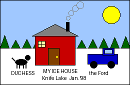

Mora, Minnesota ~ "Gateway to the North" ~ pop. 3,193


I took the "Internet For Beginners" class at the Mora Public Library in October (thank you Mrs. Ostlund!!) and our homework was to make a page so here it is. I am going to keep adding to it so come back and see.
|
WHAT'S NEW 11/22/98 - Rain totals thru October. Marquee!! (Kris showed me) 11/8/98 - Put in my drawing of the ice house 11/1/98 - Added Dad's part 10/24/98 - Page started |
I am 52 years old. I was born in Cambridge MN and grew up out on Hwy 65. I married my wife Jan in 1971 and we have one daughter Kristin who is a sophomore at UMD in Duluth, she is going to be a Physical Therapist. (Hi Kris!! Call your mother.)
Jan works at the Kanabec County Courthouse. We go to Trinity Lutheran.
I like ice fishing, the Twins, and fixing things that should probably be thrown out.
Our computer is a Gateway 2000 with a 233 MHz Pentium and 32 megs of ram. I bought it last Christmas so Kris could e-mail us from school, now I am the one on it every night and Jan says I have a new girlfriend named Netscape.
 | Route is 118 miles long (it was 96 til they combined us with part of Route 5 in 1993) |
| 512 boxes |
| About 60 miles of gravel |
| I drive a '94 Jeep Cherokee with right hand drive, 187,000 miles on it. That is my 6th vehicle on the route. |
| Dog bites: 2 |
| Days the route did not go out since 1975: 1 (Halloween Blizzard 1991) |
TO MY PATRONS ON ROUTE 3 who got the little card in your box with this address on it, Hello! PLEASE remember to shovel out in front of your box after the plow goes by. If I can't reach the box from the Jeep I can't leave your mail. Thank you!!
Duchess is our black Lab. She is 11 and her chin is gray now but she still goes crazy when the UPS truck comes. She used to ride the route with me until the Postmaster said that was not allowed. She can tell the sound of my Jeep from a mile away.
I would put a picture of her here but we do not have a scanner yet. Jan's sister Bonnie has one so after Thanksgiving there will be real pictures. She is in my drawing below though.

I built it in 1989 out of plywood and 2x4's in the garage. It is 6 x 8 with 4 holes, a Mr. Heater, a bench and a radio. We pull it out on Knife Lake when there is 8 inches of good ice, usually around the middle of December.
Best day ever was 23 crappies and a 6 lb. walleye, February 1996.
I have kept a rain gauge on the fence post by the garden since 1980. I write it down every night in a notebook on the porch. If anyone else around Kanabec County keeps one e-mail me, I would like to compare.
| Month | Inches | Notes |
|---|---|---|
| April | 2.10 | Gauge out Apr. 6 |
| May | 3.45 | |
| June | 4.80 | Hail June 14, beans flattened |
| July | 3.95 | |
| August | 5.62 | 2.90 in one night Aug. 20 |
| September | 2.30 | |
| October | 1.75 | Gauge in Oct. 30 |
| TOTAL | 23.97 | Most since 1993 |
Dad carried Route 3 from 1948 until he retired in 1975.
I miss you Dad.
I took it over from him the next spring.
He did it with a Model A the first two winters.
People on the route still tell me things he did for them.
Links
(I am still working on making these into real links, I wrote down what Mrs. Ostlund showed me wrong.)
Please Sign My Guestbook!
The guestbook is not working yet so for now please
E-MAIL ME and tell me where you are from.
So far I have heard from 9 states and one man in Norway!

Under Construction
You are visitor number
since 10/24/98
Tell your friends! My address is
Best viewed with Netscape Navigator at 800 x 600
http://www.geocities.com/Heartland/Plains/4417/
Last updated 11/22/98